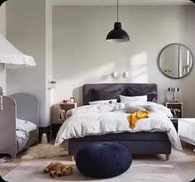
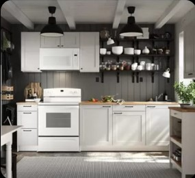
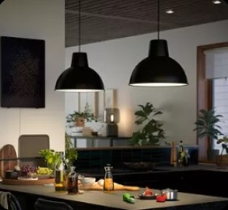
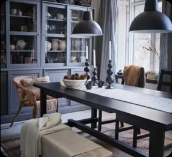
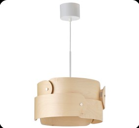
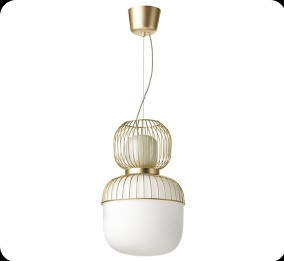
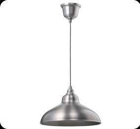
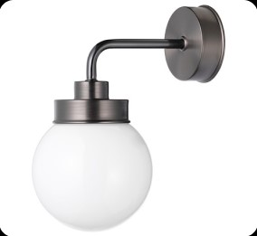

SKURUP
Lampu gantung, hitam
Rincian Produk
Logam, konstruksi kasar dan berdesain abadi - nikmati seri lampu SKURUP untuk waktu yang lama. Penyesuaian sederhana dan jenis lampu yang berbeda membuat seri ini praktis dan fleksibel di seluruh rumah.
Kelebihan
Lampu ini memberi pencahayaan yang nyaman untuk makan dan menyebarkan cahaya terarah di meja makan atau meja bar anda.
Anda dapat dengan mudah menyesuaikan ketinggian lampu gantung sesuai dengan Anda dan rumah Anda. Cukup angkat penutup di bagian atas kap lampu dan bungkus kabelnya.
Bahan
Kap lampu plafon: Plastik polipropilena
Kap lampu:Baja, Cat, Powder coating
Ukuran
Maks : 22 Watt
Tinggi : 29 cm
Diameter : 38 cm
Panjang Kabel : 1.5 m
Tampilan Produk




Produk serupa



